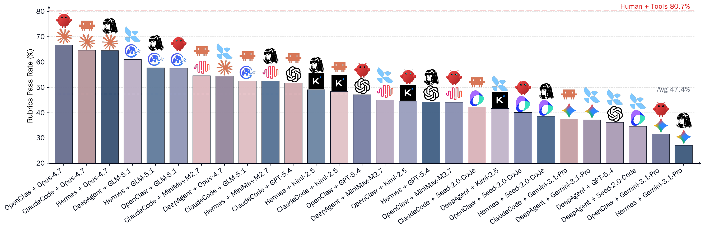

Dataset Visualizations
Workspace-Bench 1.0 contains 5 worker profiles, 74 file types, 20,476 files, 388 tasks, and 7,399 rubrics. This page summarizes the structure of the benchmark and the workload characteristics that drive evaluation difficulty.
Dataset Overview
The benchmark is organized around realistic professional workspaces. Each task requires reasoning over files, metadata, and dependencies that may not be explicit in the initial instruction.
Official Workspace-Bench Figures
These figures are pulled from the public Workspace-Bench repository assets and shown directly in the site.
Framework

Distribution

Task Complexity
Complexity comes from both the number of required files and the structure of the dependency graph. Workspace-Bench makes context search part of the benchmark rather than an implementation detail.
Rubrics and Success

Lite Split
Workspace-Bench-Lite contains 100 tasks and reduces evaluation cost by approximately 70% while retaining representative patterns of hidden file dependencies, multi-step context integration, and rubric-heavy grading.
File Type Distribution
The 74 file types span documents, spreadsheets, code, structured data, media, metadata, configuration, and archived bundles. This diversity pushes agents beyond narrow code-only or document-only settings.